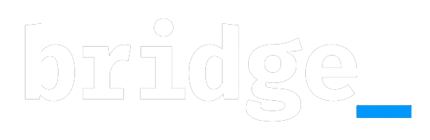
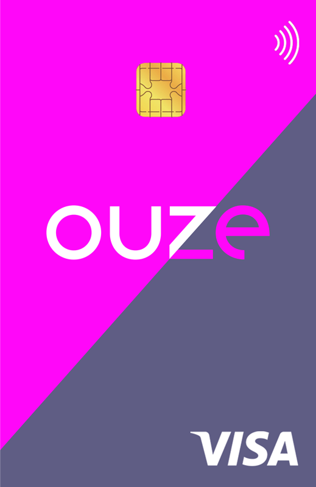
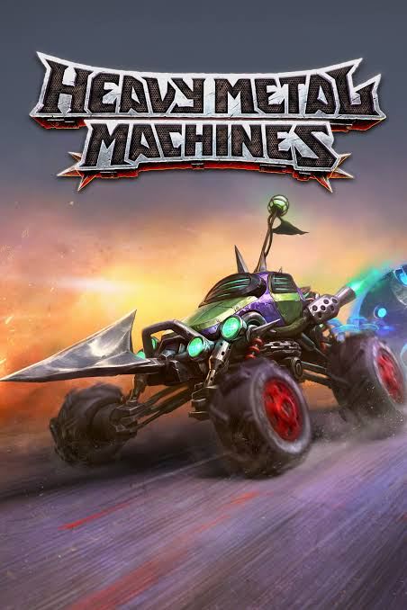
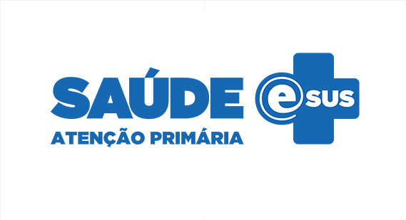

Thiago Mohr da Silveira
Coordinador
de Sistemas
& Tech Lead
Especializado en liderar ecosistemas de crédito de alta concurrencia, lanzar productos financieros para retail y optimizar arquitecturas heredadas. Sólida trayectoria en la gestión de equipos de ingeniería multidisciplinares con impacto operacional de 200 millones por mes.
Sobre Mí
01Líder estratégico de TI que conecta la arquitectura de software compleja con resultados de negocio de alto impacto.
Durante más de 10 años, me he especializado en construir sistemas financieros resilientes y de alta concurrencia, y en liderar equipos de ingeniería que generan resultados medibles. Actualmente como Coordinador de Sistemas en Ouze Serviços Financeiros (Grupo Studio Z), dirijo ecosistemas críticos de motores de crédito y arquitecturas de backend que procesan más de R$ 200M mensuales.
Mi experiencia combina liderazgo técnico profundo — Python, Java Spring, bases de datos relacionales — con marcos de gobernanza ágil (Scrum, Kanban, gestión de proyectos a nivel MBA) para construir soluciones que escalan bajo carga de producción real.
Expertise
02Backend & Ingeniería
Liderazgo & Metodologías
Trayectoria Profesional
Coordinador de Sistemas
Dirigiendo la ingeniería de software y la entrega ágil para la división de servicios financieros de Ouze, gestionando ecosistemas con un volumen de transacciones mensual superior a R$ 200 millones.
- Lideré equipos de ingeniería multidisciplinares en el lanzamiento de la Super App Studio Z / Ouze, integrando fidelidad de retail con servicios financieros digitales.
- Orquesté la modernización de motores de crédito esenciales, garantizando alta disponibilidad y reduciendo la latencia bajo tráfico masivo.
- Gestioné la transición estructural compleja de sistemas heredados de Calcard / Ouze a una arquitectura orientada a servicios y lista para la nube.
- Instauré metodologías ágiles avanzadas, mejorando la previsibilidad de las entregas y la colaboración entre equipos.

Consultor
Orquesté la modernización de sistemas esenciales y la expansión estructural para ecosistemas de crédito.
- Modernicé flujos de emisión de crédito alineados con la asociación estratégica con Visa.
- Migré operaciones de negocios de modelos heredados monolíticos a una gestión ágil y centrada en aplicaciones.
Analista de Calidad
Supervisé estrategias de aseguramiento de calidad y validación de estabilidad de backend para el lanzamiento global de Heavy Metal Machines en PC (Steam) y consolas.
- Diseñé y ejecuté estrategias de pruebas de carga para asegurar la sincronización en tiempo real y la estabilidad del backend con tráfico global de MOBA.
- Desarrollé suites de pruebas automatizadas modulares para componentes de engine y APIs de red personalizadas, reduciendo regresiones de lanzamiento.

Desarrollador Java
Desarrollé arquitecturas Java de nivel corporativo para infraestructura de salud pública nacional en colaboración con el Ministerio de Salud.
- e-SUS APS: Desarrollé servicios de backend esenciales para el Prontuário Eletrônico do Cidadão, centralizando datos clínicos de más de 5.000 municipios.
- SISMOB: Construí módulos complejos de auditoría y monitoreo para el Sistema de Monitoreo de Obras de Salud, rastreando inversiones federales.
- Utilicé el ecosistema Spring Framework, Hibernate y esquemas SQL optimizados para garantizar la eficiencia en consultas y la integridad de los datos.
Analista de Pruebas
Inicié la trayectoria profesional en Aseguramiento de Calidad (QA), enfocándome en métricas de rendimiento, verificación de escalabilidad y pruebas de latencia de red para títulos multijugador online (MMO).
- Taikodom: Validé la sincronización de estados en tiempo real y estabilidad de mensajería de backend para el MMO espacial brasileño.
- Heavy Metal Machines: Coordiné pruebas de integración en fase inicial, detallando matrices de prueba funcional y logs de prueba de estrés de backend.
Trabajos Seleccionados
03
Ecosistema Financiero Ouze
Super App & Reconstrucción Arquitectónica
Modernización Calcard / Ouze Visa
Transformación Core Ágil / Socio Visa
Heavy Metal Machines
Lanzamiento Global & Ingeniería de QATaikodom MMO
MMO Espacial Backend & QA
Ecosistema e-SUS APS
Arquitectura de Expediente Clínico NacionalPlataforma SISMOB
Monitoreo & Auditoría de InfraestructuraConectemos
¿Tiene interés en contratación o en discutir sobre liderazgo tecnológico estratégico? Contácteme — estoy buscando activamente oportunidades de liderazgo senior.
thiagomohrs@gmail.com